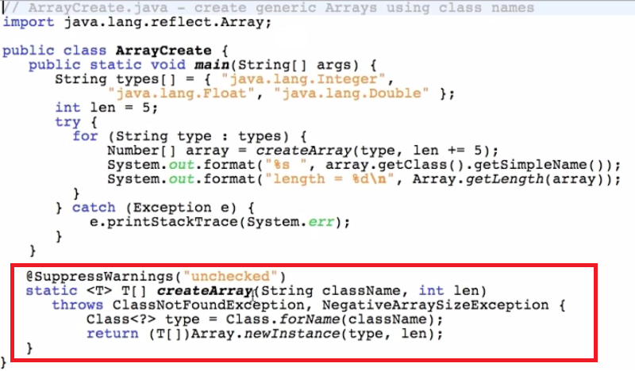

What is Reflection in java./div>
Reflection is very capable and powerful tool in java.
- The ability of computer program to examine and modify the structure and behavior of the program at run time.
- The most important part is " Type introspection" which finds methods, fields, constructor of class.
- Reflection modify the data runtime. due to reflection we can access all private members, data of class and can modify or update runtime.
- Reflection makes it possible to inspect classes,interfaces,fields and methods at runtime, without knowing the names
of the classes, methods etc. at compile time. it is also possible to instantiate new objects, invoke methods and get/set
fields values using reflection.
-
Reflection can slow down a program because the JVM can't optimize the code.
java.lang.reflect : - is package which provides following classes for reflections.
java.lang.class
java.lang.reflect.field
getFields:- use to get all public meta data including super class meta data.
getDeclaredFields:- All type of meta data (private)
java.lang.reflect.method
getMethods:- use to get all public meta data including super class meta data.
getDeclaredMethods:- All type of meta data (private)
java.lang.reflect.constructor
java.lang.reflect.modifier
REFLECTION API
What is Reflection

Reflection is the process of analysing
"all the capabilities" of a particular class at a runtime.
For example, I have a class, and I want to know all details of that class and want to access all
(implemented interfaces, extended classes, constructors, private members) of that class, then I will use Reflection API.
Reflection API is useful for products development like(Compilers,JVM Design, Servers Design, Framework Design, Tools Design).
java.lang.reflect package is main Reflection API. within following classes are useful for reflection.
- java.lang.Class :- It is used to gathered the complete meta data of particular class.
- java.lang.reflect.Field :-It is used to gathered the complete declarative information about particular variable. that means meta data of a particular variable.
- Access modifier of particular variable.
- Data type of particular variable.
- Name of particular variable.
- Value of particular variable.
- java.lang.reflect.Method :- It is used to store the completive declarative (that means meta data) information about particular methods. the meta data of a particular methods
- Access modifier of particular method.
- Data type of particular method.
- Name of particular method.
- parameters of particular method.
- return type of particular method.
- java.lang.reflect.Constructor :- It is used to managed the constructor
- Access modifier of particular Constructor.
- Name of particular Constructor.
- parameters of particular Constructor.
- java.lang.reflect.Modifier :- It is used to get Access modifiers information
its ability to modify private members of class at runtime as well as examine a class in general.
Reflection can do
- Can Inspect class and method modifiers(Privat, Public, Final, abstract)
- Can Inspect constructors, methods, and their parameters
- can Change Getting/Setting private Data
- Can Invoke Public/Private methods
Example :- how many ways to create class Object
There are three ways to create Class object in java
- By using Class.forName("Class name") method
Example :-
Class c= Class.forName("Employee");
forName method is static method of Class class. The functionality forName method is forName method will search (.class) file of provided "class" in
the current location, in java pre-define library, and also search in location which is refered by "Class path environment variable". if provided class will not found in any
location, then JVM will rised the exception java.lang.ClassNotFound
- By using getClass() method
Example :-
Employee e=new Employee();
Class c=e.getClass();
Whenever we creat the object of provided class, First JVM executes the constructor of provided class. but before executes the constructor , JVM Loads the class in to memory.
- By using Class method
Example :-
Class c=Employee.class;
How to get Class detail information using Reflection
How to get Class Field information using Reflection
How to get Class Methods information using Reflection
How to get Class Constructor information using Reflection